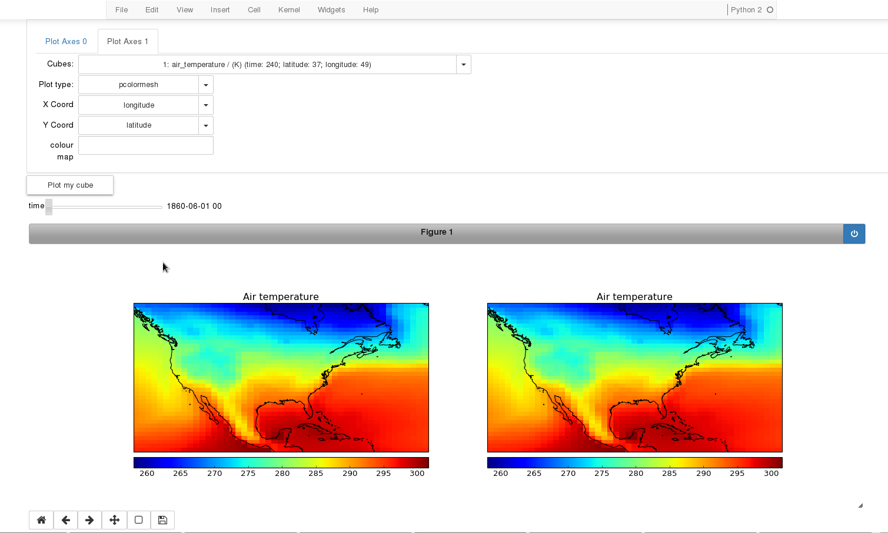

Introduction¶
Cube Browser is a Python package that makes it quicker and easier to plot and explore your Iris cube data. The package allows you to view your data in a user-friendly interactive interface that you can customize as you require.
Cube Browser incorporates Ipython widgets (ipywidgets) for plotting, including the use of sliders to browse through slices of data in your plot.
There are three different ways which you can use Cube Browser:
Using Cube Explorer:
You can use our ready-made Cube Explorers to choose and plot your Iris cubes. This is an interactive Graphical User Interface, which is available to
downloadYou can see a demonstration version of explorer via the mybinder service. This is freely hosted by generous people, but it is not fast and you should not load your own data into the sessions; it uses Iris sample data instead: mybinder Cube Explorer.Browsing cubes:
If you wish to write a Jupyter notebook to make your bespoke interactive visualisation, you can follow our guide and reference pages. This will give you more flexibility and control over your plots and layout.
Writing your own Cube Explorer:
You can construct your own cube plotting explorer in the same way that we have constructed ours. We have provided some developer documentation illustrating how to use widgets to achieve this. This could be useful if you have a combination of plots you wish to use frequently and repeatedly.
Here is the source code for the Cube Explorer we have provided.
Notebooks¶
All of our Cube Browser capabilities are built for use in Jupyter notebooks.
To open a notebook, follow the installation instructions below and then change directory to the location of the notebook you wish to view and type jupyter notebook in your terminal.
Installation¶
In the following pages you will find downloads of Jupyter notebooks containing Cube Browser operations. To be able to use these notebooks, you will need to configure your environment correctly. The most efficient and clean method to do this is to use a Conda environment.
If you have never used Conda before, you will need to follow these quick installation instructions to get started.
Once you have done this, open a terminal and type:
conda install -c scitools -c conda-forge -c scitools/label/dev python=2.7 cube_browser
This will install Cube Browser with the specific requirements necessary to run it.
Support¶
Cube Browser is developed through a collaboration between Continuum Analytics and the UK Met Office. Cube Browser is open source, available under a BSD license freely for both commercial and non-commercial use. Please file bug reports and feature requests on our github site.